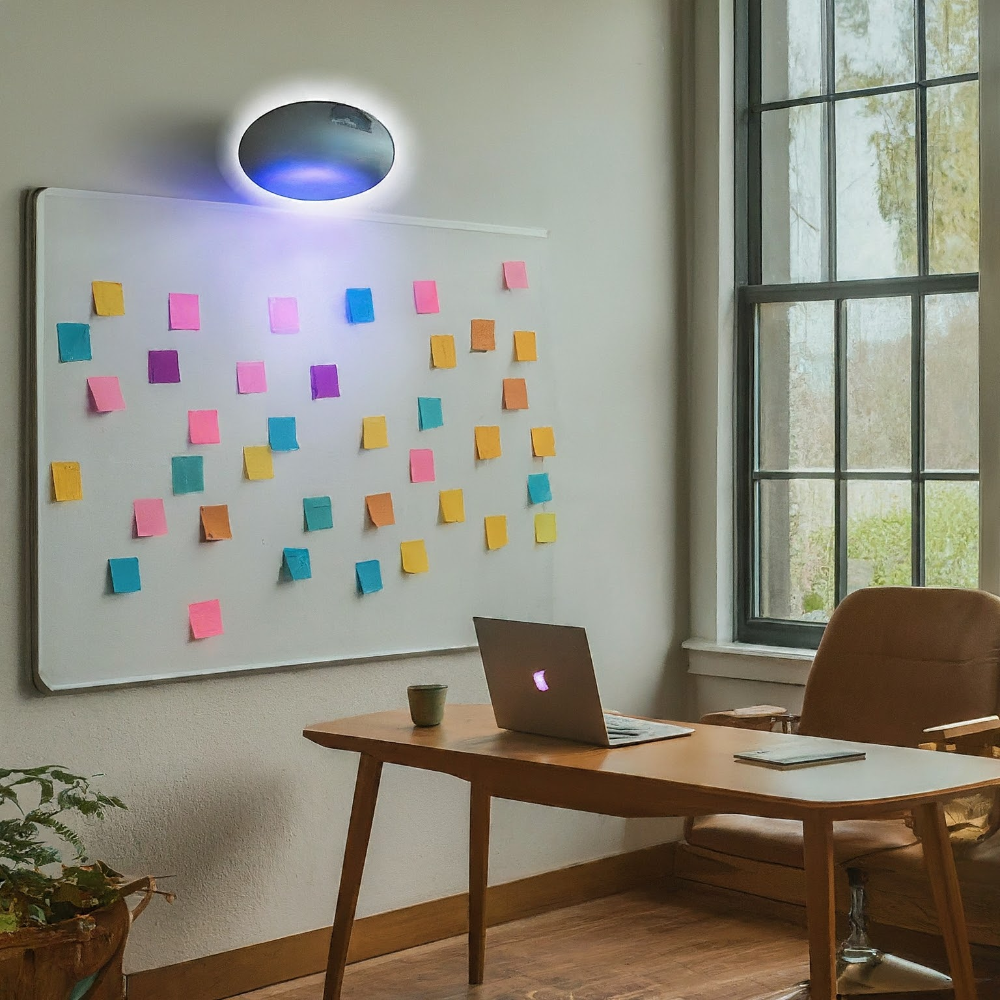
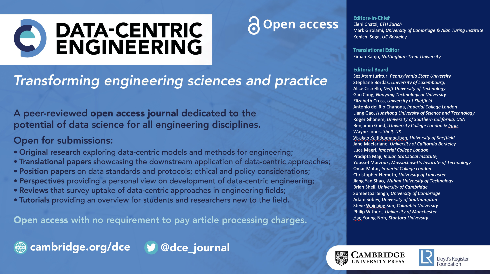

Workshop resources
This page outlines resources that will be useful during the workshop and serves as a guide.
Front board
The board is split into four main themes and one ancillary section. These themes correspond to areas that are important from a sustainability perspective:
- Sustainable aviation fuel
- Airport energy & infrastructure
- Emissions & contrails
- Aircraft and airport waste
This list is not exhaustive, and during the workshop if other themes emerge, they will be included or merged with these four. Below these headers, participants are invited to write down thoughts on what role AI can play on provided post-it notes. Some broadstrokes may include:
calculating, monitoring, or forecasting different quantities that can help better understand anthropogenic climate drivers (e.g., energy consumption, warming due to emissions and persistent contrails, estimating humidity at altitute);
identifying new strategies or initiatives that can reduce anthropogenic climate forcing (e.g., flight path optimization, SAF feedstock optimization);
evaluating the success of existing and future policy (e.g., using agent-based models).
The ancillary section of the board, titled Aspiration, is reserved for participants to write down what they hope to learn or achieve through this workshop. During registration (while collecting badges), all participants will be asked to write their aspirations on a provided post-it note and place it under the Aspiration heading on the board.
At the end of the workshop, a picture of all the post-it notes will be taken and processed using a large language model (LLM) to generate 1-2 whitepaper drafts that will be shared with all the participants.

White papers
Cambridge University Press’ Data-Centric Engineering journal has agreed to receive a 1-2 white papers that come out of this mini-workshop. These would be treated as invited papers and therefore they will go through an expedited review process. White papers will be coordinated with participants through Overleaf.

Q&As
Due to the technical and regulatory complexity of the workshop topics, participants are encouraged to write down any questions they may have. A shared document has been created where everyone can contribute questions and answers.
Ice-breaking session
All participants will be seated in small groups, and during the ice-breaking session, we will be passing a microphone around, asking some of the following questions:
- What do you do professionally?
- What about climate change (literally ice-breaking!) worries you the most?
- What about existing sustainability initiatives makes you feel optimistic?
- In the spirit of getting to know each other, tell us one unexpected thing about yourself.
Humorous Ice-Breakers (from an LLM):
- If you could have any superpower to fight climate change, what would it be and why?
- What’s your favorite eco-friendly guilty pleasure? (e.g., bamboo toilet paper, reusable straws made of unicorn tears…)
- If you were stranded on a desert island and could only bring three sustainable items, what would they be?
- If you could design an AI-powered airplane, what ridiculous feature would you include for the sake of sustainability? (Bonus points for puns!)
- What’s the most absurd way you can imagine AI helping to reduce airplane contrails?
- If you were an AI tasked with making aviation greener, what would your hilarious evil twin AI try to do instead?
- Describe the most outlandish sustainable airport of the future, complete with AI-powered amenities.
- Share the funniest “greenwashing” attempt you’ve ever seen in the aviation industry.